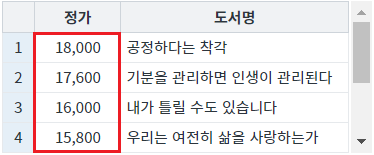
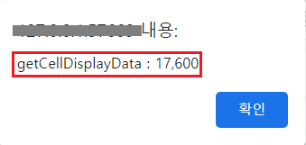
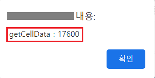

GridView의 셀의 데이터를 반환받는 예제입니다. 이 예제는 GridView의 함수 'getCellDisplayData'와 DataList의 함수 'getCellData'를 사용하였습니다.
각 함수의 기능은 다음과 같습니다.
[GridView] getCellDisplayData: GridView에 출력된 데이터를 반환합니다.
[DataList] getCellData: DataList에 할당된 데이터를 반환합니다.
GridView에 출력된 데이터 반환받기
GridView와 연결된 DataList의 데이터 반환받기
STEP 1. 초기 상태를 확인합니다.
GridView의 컬럼 '정가'에는 숫자형 포맷이 적용되어, 3자리마다 ','가 표시되었습니다.
그림 1.브라우저(Chrome) 실행 예시

STEP 2. GridView에 출력된 컬럼 '정가'의 2번째 행의 데이터를 반환받습니다.
버튼 GridView에 출력된 데이터 반환받기를 클릭합니다.STEP 3. 실행된 결과를 확인합니다.
결과값이 브라우저 alert으로 출력됩니다. 출력 값 : getCellDisplayData : 17,600
그림 2.브라우저(Chrome) 실행 예시

STEP 1. 초기 상태를 확인합니다.
GridView의 컬럼 '정가'에는 숫자형 포맷이 적용되어, 3자리마다 ','가 표시되었습니다.
그림 3.브라우저(Chrome) 실행 예시
STEP 2. GridView와 연결된 DataList의 컬럼 '정가'의 2번째 행의 데이터를 반환받습니다.
버튼 GridView와 연결된 DataList의 데이터 반환받기를 클릭합니다.STEP 3. 실행된 결과를 확인합니다.
결과값이 브라우저 alert으로 출력됩니다. 출력 값 : getCellData : 17600
그림 4.브라우저(Chrome) 실행 예시

GridView의 함수 'getCellDisplayData'를 이용하여 스크립트를 작성합니다. 세부 지정은 아래의 스크립트 예시에 작성되어 있습니다.
스크립트
//예제 파일에서는 스크립트 scwin.btn_exam1_1_onclick에 작성되어 있습니다. // GridView 'grd_exam'에 출력된 컬럼 '정가'의 2번째 행의 데이터를 반환받습니다. let result = grd_exam.getCellDisplayData(1, "price");
DataList의 함수 'getCellData'를 이용하여 스크립트를 작성합니다. 세부 지정은 아래의 스크립트 예시에 작성되어 있습니다.
스크립트
//예제 파일에서는 스크립트 scwin.btn_exam1_2_onclick에 작성되어 있습니다. // 예시 1) GridView에 연결된 DataList의 Id를 알고 있는 경우 // let result = dlt_books_1.getCellData(1, "price"); // 예시 2) GridView에 연결된 DataList를 알수 없는 경우 // GridView 'grd_exam'에 연결된 DataList 객체를 반환받습니다. let _dataList = $p.getComponentById(grd_exam.getDataList()); // GridView 'grd_exam'의 컬럼 '정가'의 2번째 행의 데이터를 반환받습니다. let result = _dataList.getCellData(1, "price");
getCellDisplayData( rowIndex , colIndex )
[DataList] getCellData( rowIndex , colInfo )
getDataList( )
[웹스퀘어5 SP5 개발 가이드] GridView
링크 : https://docs1.inswave.com/sp5_user_guide/86bdcf48029b958b